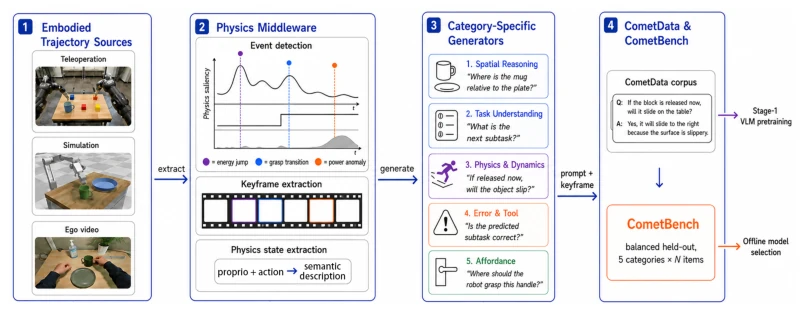
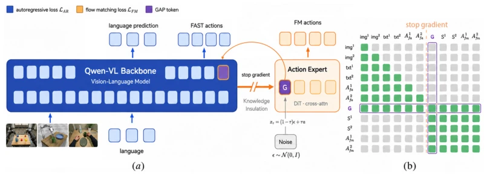

CometVLA attempts to address the "maladaptation" of VLA models regarding physical common sense, which is indeed a pain point. The authors developed an "embodied data pyramid" and accompanying CometData, attempting to demonstrate that VLM physical understanding can be directly converted into robot actions, which is quite compelling. Architecturally, GAP Token is introduced as an information bottleneck to isolate the language model and action head, with a clear rationale. However, to be honest, this paper seems somewhat suspect of "proving for the sake of proving"; although the correlation analysis is elegant, strongly binding VQA and actions raises doubts about whether the generalization problem is truly solved. Moreover, experiments focus mainly on RoboTwin simulation and limited real-world tasks; real-world robustness (e.g., varying lighting, object textures) shows uneven performance in Table 1 (e.g., the lotion task is only 37.5%), which is far from "general physical common sense". However, systematically aligning VQA to the robot action domain is indeed significantly superior to VQA datasets that merely utilize Web images.
Current VLA models, although inheriting VLM perception capabilities, remain fragile in manipulation tasks involving physical common sense. The core issue is that existing physical VQA data is typically "disembodied", mismatching the robot action domain, causing physical knowledge learned by VLM to fail to effectively transfer to action generation [1, 4]. Although Robo2VLM [14] attempts to extract VQA from robot trajectories, scene distributions often differ from strategy training data, exhibiting significant domain gaps. Additionally, existing work often treats self-view videos merely as auxiliary pretraining, or decouples perception and action, failing to answer the fundamental question "whether improving VLM physical understanding truly improves downstream action generation". CometVLA aims to fill this gap, by constructing embodied physical VQA corpora strictly aligned with robot action data, verifying the actual contribution of physical understanding to action generation.
CometVLA proposes an end-to-end framework, the core lies in the synergy of data, architecture, and training strategies. First, CometData and CometBench are constructed, a physical VQA corpus automatically generated based on an "embodied data pyramid" (teleoperation, simulation, self-view video, VQA), ensuring data distribution consistency with the robot action domain. Secondly, architecturally, the model is based on the Qwen3-VL backbone network, integrated with a FAST action tokenizer and a diffusion-based Flow Matching action expert. The key innovation is the introduction of the Global Action Prior (GAP) Token, a learnable bottleneck layer serving as the sole communication interface between the autoregressive backbone and the diffusion action expert. GAP Token aggregates task-agnostic motion patterns, guiding action generation via a cross-attention mechanism, while utilizing a Stop-Gradient barrier to prevent gradient leakage from contaminating pre-trained VLM representations. Training adopts a Knowledge Insulation strategy, jointly optimizing the VLM backbone and action head in a single pretraining stage, ensuring physical common sense is explicitly injected into the action generation process.

Figure 2: Overview of the proposed CometData generation pipeline for physics-aware embodied VLMs. (1) Multi-source embodied trajectories are collected from teleoperation, simulation, and ego-centric videos, forming a hierarchical embodied data pyramid with increasing physical grounding. (2) A physics middleware extracts keyframes, detects interaction events and converts low-level proprioceptive and action signals into semantic physical state descriptions. (3) Category-specific generators construct diverse embodied VQA tasks, spanning 5 domains with 16 categories. (4) The generated samples are curated into the CometData corpus and the sampled CometBench benchmark.

Figure 3: CometVLA architecture and global action prior token. (a) CometVLA unifies auto- regressive vision-language modeling and continuous action generation within a single framework. Multi-view observations, language tokens, and FAST actions are processed by a pre-trained Qwen3- VL backbone under the auto-regressive objective LAR. A lightweight diffusion-based action expert predicts continuous FM actions using flow matching LFM, while a stop-gradient barrier preserves pre- trained multimodal representations during policy learning. (b) Attention visibility grid of CometVLA. The orange dashed line denotes the stop-gradient barrier, and the purple block highlights the GAP token, which serves as the sole communication interface between the auto-regressive backbone and the diffusion action e
Experiments are conducted on the AgiBot G1 dual-arm robot and the RoboTwin simulation environment. CometVLA achieves success rates of 89.24% and 88.38% on the RoboTwin Easy/Hard splits respectively, outperforming SOTA baselines such as π0.5. Real robot experiments cover tasks such as makeup and organizing; some tasks (e.g., foundation liquid) have lower success rates (31.25%), revealing generalization challenges. Ablation experiments indicate that removing embodied physical VQA data or the GAP Token both lead to significant performance degradation. Correlation analysis shows that VLM performance on CometBench and VLA success rate on RoboTwin exhibit a strong positive correlation (particularly in spatial reasoning and physical dynamics domains), confirming the effectiveness of physical understanding pretraining on action generation.